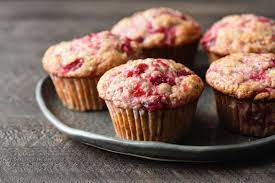

Cranberry Sauce Muffins

This recipe uses a cup of your smooth of chunky leftover cranberry sauce
Leftover cranberry sauce is obviously great on turkey sandwiches,
and it's even delicious warmed up and spooned over ice cream or pancakes,
but have you tried it in muffins?
This recipe comes together in minutes and the moist,
sweet muffins are perfect for a post-Thanksgiving
breakfast of snack.
Ingredients
- Flour
- Sugar
- Baking powder
- Spices and flavourings
- Leftover cranberry sauce
- Milk
- Oil
- Egg
Steps
- Preheat the oven to 400 degrees F (200 degrees C).
Line 18 muffin cups with paper liners.
- Beat cranberry sauce, milk, oil, egg,
and vanilla together in a bowl
until well combined.
- Beat cranberry sauce, milk, oil, egg,
and vanilla together in a bowl until well combined.
- Bake in the preheated oven until golden brown,
about 20 minutes.
Return to main page